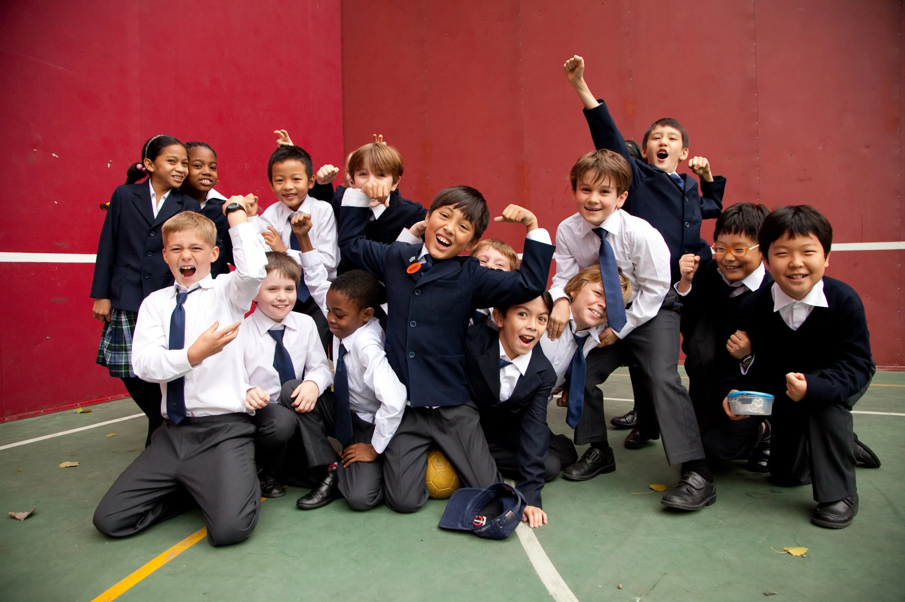

I’ve spent more than a decade on the creative front line of international schools. I’ve been in their corridors before the first bell, in their science labs and music rooms, on their playing fields in the last light of the afternoon. Through more campaigns and countries than I can count, I have developed a strong instinct about what makes one school feel different from another, and very little of it has to do with what schools say about themselves.
I’ve always been able to feel those differences, but never able to put a number on them. So I decided to test it.
An experiment in subtraction
I gathered the websites of 57 international schools and school groups with no connection to each other: Europe, the Middle East, Asia, Africa and the Americas; IB, British and American curricula; small independents and large groups. Then I read their homepages and the pages where they describe who they are (mission, values, “why choose us”) the way a busy parent takes them in. I paid attention not just to how often a word appears, but to how large it is on screen and how prominently it’s placed.
Next came the subtraction. I set aside the superlatives, the words every institution reaches for when it wants to sound impressive: excellent, world-class, outstanding, exceptional, leading. These words aren’t lies. Most of the schools using them are, in fact, very good. But they carry no real information. A parent can’t learn anything about a school from being told it is exceptional, because every school they are considering says the same. And nearly every one does: 56 of the 57 sites used at least one superlative, and “excellence” alone appeared on 49.
Once those words are gone, what remains should be each school’s real self-description, the words it has chosen to define its true character.
What remained
After the subtraction, I expected each school’s character to come into focus. Instead, the same words kept surfacing. 54 of the 57 sites described themselves as a community. 51 called themselves supportive, and 51 creative. 49 promised to inspire.
The same 20 words appear on most school websites
Number of the 57 websites using each word
The average site used 15 of these 20 words. Even the most distinctive used five. And when I looked only at the ten words each school gave the most visual weight, an average of six or seven came from this same shared list.
Put those twenty words together, and you get a mission statement that could belong to almost any of them. If the following sounds familiar, you’ll know what I’m talking about:
“At [Insert School Name], we are a welcoming, diverse and inclusive community where every child is known, supported and inspired. In a caring, nurturing environment, our students are challenged to discover their passions, grow in confidence and reach their full potential. Through a creative, collaborative and innovative approach to learning, we offer every learner the opportunity to thrive, within a culture of respect and excellence. Together, we prepare curious, compassionate global citizens for success on their journey into the future.”
It doesn’t read like jargon. It reads warm, sincere and entirely plausible, which is exactly the problem. If you’d swapped the schools’ vocabularies overnight, I doubt any of their communities would have noticed.
Two more patterns stood out. First, these words rarely get the biggest type. On average they appear at little more than body-text size; the headlines go to the school’s name, a welcome, campus facts and buttons. Only three of the twenty regularly earn headline space: community, inspire and journey. That last one is telling: it describes the experience of joining a school rather than the school itself. Second, schools belonging to the same group shared even more of their vocabulary with each other than unrelated schools did, often more than half of it.
School after school, region after region, the pattern held.
This is not a failure
The easy response to this finding is cynicism: schools are lazy, marketing is empty, it’s all the same brochure. I want to resist that, because I think it’s wrong, and because I’ve worked with enough school marketing teams to know how thoughtful and hardworking they generally are.
What I found isn’t a failure of marketing. It’s what marketing looks like in a mature category that has been optimized to resonate with prospective families.
When a market becomes sophisticated, when every serious participant understands its audience well, the messaging converges. Everyone learns what the discerning customer values, and everyone tells the truth about offering it. International school parents want their children to be safe, known and cared for. They want academic challenge. They want a genuinely international outlook. They want an environment where difference is welcomed rather than tolerated. Good schools provide these things, so good schools say so.

The words are shared because the values are shared. And the values are shared because they’re right.
That’s the uncomfortable part. Not that schools are saying false things, but that they are all saying true things, the same true things, to the same careful parent, who is reading five or six of these websites in a single evening and finding them blurring together.
The implication is quiet but significant: positioning no longer lives in the words we use. A school cannot out-word its competitors, because there are no better words left. “Caring” has no more distinctive synonym. Refining the adjectives, commissioning another round of brand language, debating whether “nurturing” or “supportive” sounds warmer: this work has a very low ceiling. It can make a school’s language clearer. It cannot make it different.
A school cannot out-word its competitors, because there are no better words left.
So where does the difference go?